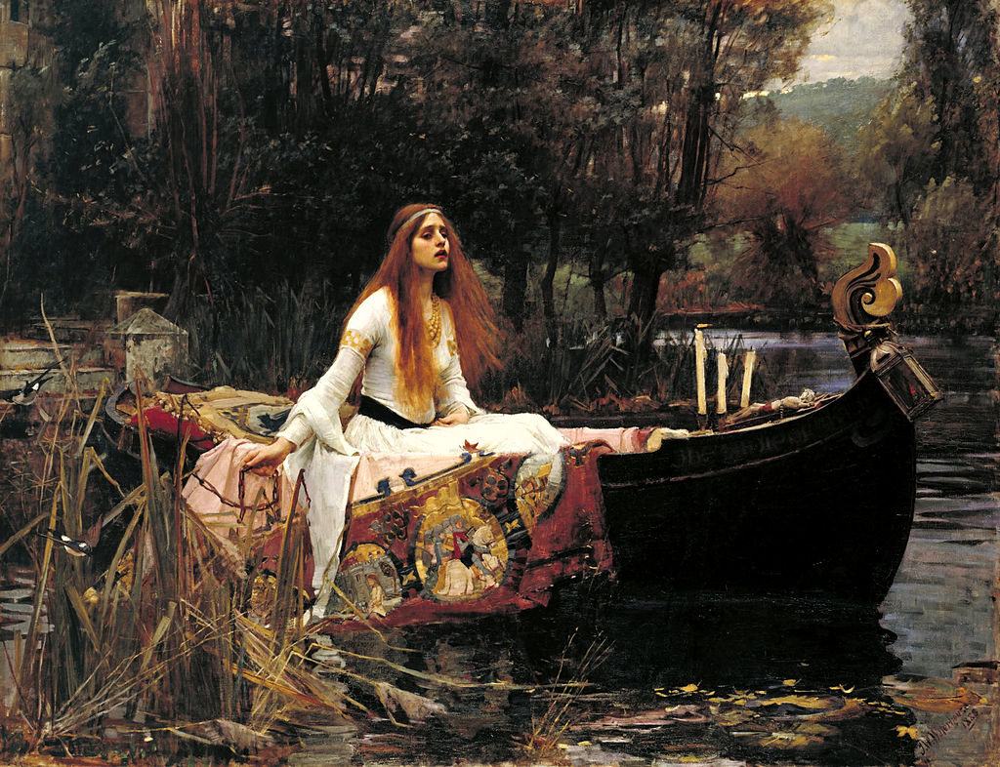

<head>
<meta charset="UTF-8" />
<meta name="keywords" content="drawing, painting" />
<meta name="description" content="drawings by Sunjy" />
<title>Sunjy</title>
<link rel="shortcut icon" type="image/x-icon" href="../../mImages/mCommon/favicon.ico" media="screen" />
<link rel="stylesheet" type="text/css" href="../../mCsses/mCommon/mCssA.css" />
<link rel="stylesheet" type="text/css" href="../../mCsses/mCommon/mCssB.css" />
<link rel="stylesheet" type="text/css" href="../../mCsses/mCommon/mCssC.css" />
<link rel="stylesheet" type="text/css" href="../../mCsses/mCommon/mCssD.css" />
<link rel="stylesheet" type="text/css" href="../../mCsses/mContent/mCssA.css" />
<link rel="stylesheet" type="text/css" href="../../mCsses/mContent/mCssB.css" />
<link rel="stylesheet" type="text/css" href="../../mCsses/mContent/mCssC.css" />
<link rel="stylesheet" type="text/css" href="../../mCsses/mContent/mCssD.css" />
</head>
<script type="text/javascript" src="../../mScripts/mContent/mContentAA.js" /></script>
<script type="text/javascript" src="../../mScripts/mContent/mContentAB.js" /></script>
<script type="text/javascript" src="../../mScripts/mContent/mContentAC.js" /></script>
<script type="text/javascript" src="../../mScripts/mContent/mContentAD.js" /></script>
<script type="text/javascript"></script> 
<script type="text/javascript">
document.write('<div class="mImgAbsolute"></div>');
/*
document.write('<p class="mFontSizeBColor" />From a white paper...</p>');
document.write('<table class="center"><tr><td>');
document.write('');
document.write('</td></tr></table>');
*/
</script>


<script type="text/javascript">
document.write('<p class="mFontSizeBColor" />The Lady of Shalott</p>');
document.write('<p class="mFontSizeSColor" />“The Lady of Shalott” by John William Waterhouse portrays the ending of Alfred, Lord Tennyson’s 1832 poem of the same name.<br><br>The scene shows the plight of a young woman from Arthurian legend, who yearned with unrequited love for the knight Sir Lancelot but was isolated under a curse in a tower near King Arthur’s Camelot.<br><br>The Lady of Shalott was forbidden to look directly at the outside world. She was doomed to view the world through a mirror and weave what she saw into a tapestry. Her despair intensified when the Lady saw loving couples in the far distance.<br><br>One day she saw Sir Lancelot passing on his way in the reflection of her mirror, and she was overcome with desire and dared to look out at Camelot, bringing about the curse.<br><br>The lady decided to face her destiny and escaped by boat, to sail to Camelot and her inevitable death.<br><br>Her frozen body was found afterward by the knights and ladies of Camelot.<br><br>“With a glassy countenance<br>Did she look to Camelot.<br>And at the closing of the day<br>She loosed the chain, and down she lay;<br>The broad stream bore her far away,<br>The Lady of Shalott.” <br><br>“The Lady of Shalott” is one of Waterhouse’s most famous masterpieces, which features the style of the Pre-Raphaelite Brotherhood.<br><br>His artworks were notable for the depiction of women from ancient Greek mythology and Arthurian legend.<br></p>');
document.write('<table class="center" /><tr><td>');
document.write('<br>The scene shows the plight of a young woman from Arthurian legend, who yearned with unrequited love for the knight Sir Lancelot but was isolated under a curse in a tower near King Arthur’s Camelot.<br><br>The Lady of Shalott was forbidden to look directly at the outside world. She was doomed to view the world through a mirror and weave what she saw into a tapestry. Her despair intensified when the Lady saw loving couples in the far distance.<br><br>One day she saw Sir Lancelot passing on his way in the reflection of her mirror, and she was overcome with desire and dared to look out at Camelot, bringing about the curse.<br><br>The lady decided to face her destiny and escaped by boat, to sail to Camelot and her inevitable death.<br><br>Her frozen body was found afterward by the knights and ladies of Camelot.<br><br>“With a glassy countenance<br>Did she look to Camelot.<br>And at the closing of the day<br>She loosed the chain, and down she lay;<br>The broad stream bore her far away,<br>The Lady of Shalott.” <br><br>“The Lady of Shalott” is one of Waterhouse’s most famous masterpieces, which features the style of the Pre-Raphaelite Brotherhood.<br><br>His artworks were notable for the depiction of women from ancient Greek mythology and Arthurian legend.<br>" />');
document.write('</td></tr></table>');
</script>


